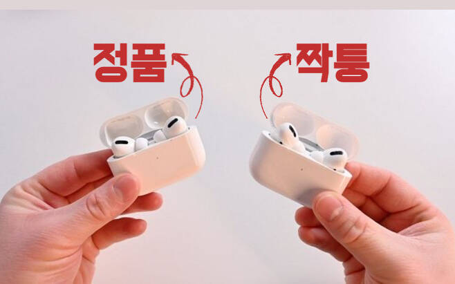

        <section class="slide c orb-c" data-n="첫 번째, 환경의 간극입니다. 배울 때는 되던 게 현업에서는 안 되는 건데요.
        
                        정품을 안써본 사람한테 짝퉁을 먼저 주면,&nbsp;
                                                에이 그거 별로라는 인식만 남습니다.
                                                
                        마치 이런거랑 비슷한 장면 같아요. 저에게 에어팟과 다이슨은 안쓰기 전으로 돌아갈 수 없는 애정템인데요. 알리나 테무에서 겉으로만 비슷해보이는 에어핏 차이슨 이런걸 써보면 에이 뭐 별론데? 라는 평만 남고 정말 좋은걸 써보기도 전에 반감만 가지게 됩니다.
                        
                        사내형 AI 모델이 아직까지는 그런 것 같아요. 어쨌든 외부망에서 혹은 개인 피씨나 태블릿으로 AI를 사용하고 그걸 다시 업무환경으로 가져오는 것 자체가 번거롭고, 내부망에 있는 정보를 밖으로 내는 것 자체가 보안정책을 위배하는 것이 되곤 하구요.
                                                
                                                mySUNI에서도 진행하는 교육 중 상당수는 외부PC를 사용해서 진행하는데요. 현업에서는 보안 때문에 쓸 기회를 찾지 못하고 또 모델이 업데이트되면서 쓸 필요도 못느끼게 되는 거죠.">
                                                                                          <div class="layer-mid" style="background:radial-gradient(ellipse at 30% 50%,rgba(212,165,116,0.2) 0%,transparent 40%);"></div>
                                                                                          <div class="tag">환경의 간극</div>
                                                                                          <h2>배울 때는 되던 게 현업에서는 <span class="em">안 된다</span></h2>
                                                                                
                                                                                          <div style="display: grid; grid-template-columns: 1fr 1fr; gap: 32px; max-width: 1100px; margin: 24px auto 0px; align-items: center; position: relative; left: 26px; top: 50px;">
                                                                                
                                                                                            <!-- 좌측: 이미지 -->
                                                                                            <div style="width: 100%; border-radius: var(--radius); overflow: hidden; box-shadow: rgba(0, 0, 0, 0.5) 0px 8px 32px, rgba(255, 255, 255, 0.06) 0px 0px 0px 1px; position: relative;">
                                                                                              
                                                                                            </div>
                                                                                
                                                                                            <!-- 우측: 텍스트 -->
                                                                                            <div style="display: flex; flex-direction: column; justify-content: center; gap: 16px;">
                                                                                              <p style="font-size: clamp(17px, 1.5vw, 22px); color: var(--g400); line-height: 1.7; position: relative;">분명 같은 "AI"인데 뭔가 다르다.</p>
                                                                                              <p style="font-size: clamp(16px, 1.3vw, 20px); color: var(--g500); line-height: 1.7;">교육에서 쓴 건 <span style="color:var(--teal);">정품</span><br>현업에서 만난 건 <span style="color:var(--copper);">짝퉁</span><br><br><span style="color:var(--g400);">"그거 별로더라"</span>는 인식이 생겨버린다.</p>
                                                                                              <p style="font-size: clamp(18px, 1.6vw, 24px); font-weight: 700; color: var(--white); margin-top: 8px; line-height: 1.5; position: relative; left: 0px; top: 0px;"><span style="color: var(--copper);">가능한 걸 아는데 환경이 안 받쳐줌</span></p>
                                                                                            </div>
                                                                                
                                                                                          </div>
                                                                                        </section>
